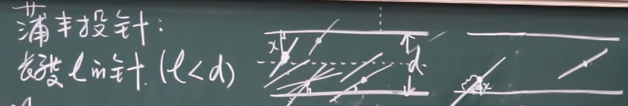

概率论与数理统计 （2）
概率论与数理统计（2）
事件的概率
定义
概率是衡量可能性大小的量，对于事件A,我们记：概率是$P(A)$
性质
1）$P(\Omega)=1$
2）$P(\phi)=0$
3）$0\leq P(A)\leq 1$
古典概率模型
概念
一个概率事件可以被视作古典概率模型的条件如下：
1）有限个样本点
2）所有的事件都是等可能性的！
于是，基于我们的直觉，我们可以构想出集合下样本点发生的概率是：
记数：
首先引入我们高中排列组合的知识：
加法原理：几种方案（加法算）
乘法原理：几步走（乘法算）
排列
从N个不同的元素选出M个元素的排列
组合
从N个元素中选出M个不同元素
几何概型
如果我们的样本点连续的密不可分：我们可以用面积，线段占比长度来衡量，我们就说这个是几何概型：
举个例子：蒲丰投针问题

求相交的概率:
注意到：
故：
频率与概率
定义
定义频率是N次实验里出现了M次事件，则频率为：
性质
1）非负性：$0\leq\omega_n(A)\leq1$
2） 规范：$\omega_n(\emptyset)=0,\omega_n(\Omega)=1$
3）可加性：$A_1,A_2…A_m$不相容，则：$\omega_n(A_1+…A_m)=\omega_n(A_1)+…\omega_n(A_m)$
公理化
我们有三条公理：
1.（非负性）$0\leq P(A)\leq 1$
2.（规范化）$P(\Omega)=1$
3.（完全可加）$A_1$,$A_2$…不相容：则$P(A_1+A_2+…)=P(A_1)+…$
由此推导性质
1）$P(\phi)=0$
推导：$\Omega=\Omega+\phi+\phi+…$
故：$P(\Omega)=P(\Omega)+P(\phi)+…$推导：$P(\phi)=0$
2)$P(\bar{A})=1-P(A)$
推导：$A \cap \bar A = \phi,A \cup \bar A = \Omega$
故：$P(\Omega)=P(A)+P(\bar A)=1$
3)对于完备事件组：$A_1,A_2,…A_n$,$\sum_{i=1}^nP_i=1$
4)$P(A-B)=P(A)-P(AB)$
5)$P(A+B)=P(A)+P(B)-P(AB)$
推论：$P(A+B+C)=P(A)+P(B)+P(C)-P(AB)-P(BC)-P(AC)+P(ABC)$